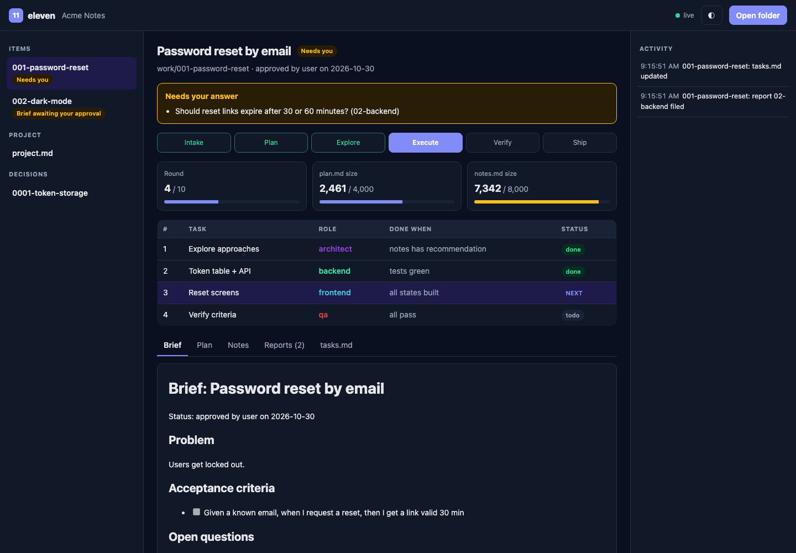

Eleven roles, one loop, shared files. Drop one folder into any project and your coding agent works like a full software team: product, design, architecture, engineering, QA, DevOps, security and docs, led by a CTO.

The live UI: watch the loop, the tasks and every report as your agents write them.
Install in a minute
eleven installs to ./eleven in your project and hides itself with .git/info/exclude, so your repo and your teammates never see it. No dependencies, no server.
# once $ git clone https://github.com/AbdullhRtima/eleven ~/eleven # per project $ ~/eleven/install.sh ~/code/my-app
# once > git clone https://github.com/AbdullhRtima/eleven $HOME\eleven # per project > ~\eleven\install.ps1 C:\code\my-app
Read eleven/AGENTS.md and act as the CTO. New item 001: <your idea>. Start at step 0.How it works
Long chats rot: context fills with noise and the model forgets its own decisions. eleven gives each task a fresh agent and keeps memory in a small, rewritten set of files called the ledger.
Product writes a brief with testable criteria. You approve.
The CTO writes a short strategy and seed tasks.
The architect maps the hard part, the options and the pitfalls. No code yet.
The CTO picks exactly one next task for one role.
A fresh agent does that task and files a report with evidence.
QA checks every criterion. A red check beats any "done".
Merge and release small and often. You accept.
The team
Each role is one short Markdown file: what it does, what it never does, and when it's done. Not every task needs everyone. A bug fix is just CTO → engineer → QA.
Runs the loop. Plans, picks the next task and role, merges, ships, and enforces the guards.
Brief, scope, non-goals, testable acceptance criteria.
Flows, screens, every state, real copy, accessibility.
The core difficulty, the approaches, interfaces and decision records.
APIs, domain logic, data, safe migrations. Test-first.
Web UI built to design in every state, accessible and fast.
iOS and Android: offline, app lifecycle, permissions.
Verifies every criterion with evidence. Can veto "done".
CI, deploys, rollback, observability.
Threat models and reviews. High severity blocks shipping.
README, docs and changelog that match what shipped.
Approve the brief, answer questions, accept the result.
Built on research
eleven's loop comes from GVS5H (Gao et al., 2026): one model, split into a manager and fresh single-task workers that coordinate through files on disk.
To be fair about it: the scaffold uses about 3× the tokens of a single call, strong models gain least, and some configurations got worse. eleven adds the roles a real product needs (design, security, DevOps, docs) and keeps you at every gate.
Why eleven
The whole kit is about 25 Markdown files. Read it in fifteen minutes, then change anything.
Claude Code, Codex, opencode, Cursor: anything that reads AGENTS.md. No lock-in, no framework.
Open your eleven folder at eleven.rtima.org/app or locally. It updates every 2 seconds and nothing is uploaded.
Open questions, briefs waiting for approval and QA failures are pulled to the top.
Every report pastes the real build and test output. QA re-runs it.
Expensive choices get a one-page record, so nobody re-argues them next month.
install.sh for macOS and Linux, install.ps1 for Windows. Safe re-installs; --update never touches your work.
FAQ
Yes, often about 3× a single chat for a full loop. You buy fewer reworks, fewer surprises and a written trail of why. For tiny fixes, skip roles: CTO → engineer → QA.
No. eleven is just files in your project. The live UI reads your folder in your browser through the File System Access API; nothing is uploaded.
Chrome and Edge give live updates. Firefox and Safari can open a snapshot.
No. It's excluded through .git/info/exclude, which is local to your clone. To share the ledger with your team, remove that line and commit eleven/work.
Please do. When an agent repeats a mistake, add a line to its role file. That's how your team learns.
Give your agent a team, a loop and a definition of done.